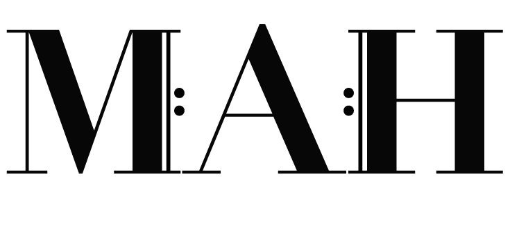

MUSICIANS' ASSOCIATION OF HAWAI'I
The Project
To re-design any logo we thought could be improved.
The Solution
A conch shell, also known as pū, is used before a ceremony to mark the official beginning. The treble clef was introduced because of the similar curves in a pū. Of course it also plays a big part of indicating the pitch of written notes. I wanted the colors to be different enough to see the treble clef, but similar enough to see the pū as a whole. I also went with warm colors because I wanted the logo to feel light.
Original

Sketches

Three Variations

Color Renditions

Final